Welcome!
Welcome to flow, a system for defining and running parallel,
dataflow programs like this one:

Page through this guide using the '>' and '<' buttons on the side of the page or navigating directly to a section using the Table of Contents on the left.
The top-level sections are:
- Introduction to Flow
- Your First Flow
- Defining flows
- Running flows
- The
flowrrunner - Debugging Flows
- The Flow Standard Library
- Sample flows
- Developing Flow
- Internals of the Flow Project
What is 'flow'
flow is a system for defining and running inherently parallel, data-dependency-driven 'programs'.
A flow is a program created by a description of interconnected and communicating processes.
A process can have zero or more inputs and produces zero or one output. They have no side-effects. There is no shared-memory.
The interconnections between processes are explicit declarations of data dependencies between them. i.e. what data is required for a process to be able to run, and what output it produces.
Thus a flow is inherently parallel, without any further need to express the parallelism of the described algorithm.
As part of describing the interconnections, I would like flow to be also visual, making the data dependencies visible
and directly "author-able". Processes and sub-flows are interchangeable and nestable, so that higher
level programs can be constructed by combining primitive processes and nested 'flows', making flows reusable.
At the time of writing, I haven't been able to do the GUI for the visual creation, viewing, running and debugging of flows - and flows are described in a textual intermediate format based on TOML. This format could be used as the description format for a visual GUI though.
I don't consider it a "programming language" as the functionality of the program is created from the combination of many low-level functions, that can be very fine grained and implemented in many programming languages (or even assembly, WebAssembly, LLVM-IR or something else). Most logic (control flow, loops) comes from how the processes are "wired together" in 'flows'. I have chosen to implement my basic processes in 'flowstdlib' and the 'flowr' run-time in rust (but they could be in other languages).
I don't consider it (or the flow description format) a DSL. The file format is chosen for describing a flow in text. The file format is not important, providing it can describe the flow. I chose TOML as there was good library support for parsing it in rust and it's a bit easier on the eyes than writing JSON. I have made provisions for the flow description to be able to be in other formats and even to be able to mix and combine descriptions in multiple formats. I started a JSON one but haven't had the need to implement it as TOML is working fine so far.
Q. Is it high-level or low-level?
A. "Well...yes".
The level of granularity chosen for the implementation of the primitive processes that flows are built from is arbitrary. A process could be as simple as adding two numbers, or it could implement a complex algorithm.
A number of simple primitive processes can be combined together into a flow (which is also a process) and hence appear as a complex process to it's users. Or it could be a complex primitive process, implementing the entire algorithm in code. The users of the process (complex primitive process, or a flow process built from multiple others) should not have to know how it is implemented. They see the definition of inputs and outputs and use it indistinctly.
Fundamental tenets of 'flow'?
The 'tenets', or fundamental design principles, of flow include:
- No Global shared memory
- Processes have no side-effects (exception is IO processes which I'll describe later)
- Encapsulation - complexity of a Process is hidden inside it's definition and you don't need to know it's implementation to know how to use it. In fact a Process can be a primitive process implemented as a single function in code or an entire sub-flow containing many sub-layers
- Re-usability - enabled by encapsulation. A well defined process can be used in many other flows via references to it.
- Portability - the intention is that the run-time can run on many platforms (and the libraries have been written to be able to compile to WASM and run in a browser also) and that implementations of primitive Processses supplied by the user can be compiled to WASM once, then distributed with the flow and run by any of the run-times
- Polyglot - although the compiler is written in one language, others versions could be written in other languages. There is only one run-time written at the moment, but others could be written in other languages to run flows compiled by any compiler. Process implementations supplied with a flow can be written in any language that can compile to WASM, so it can then be distributed with the flow and then loaded and run by any run-time implementation.
- Functional Composition/Decomposition - a problem can be decomposed into a number of communicating processes, and those in turn can be decomposed and so on down in a hierarchy of processes until primitive processes are used. Thus the implementation is composed of a number of processes, some of which maybe reused from elsewhere and some specific to the problem being solved.
- Data Composition/Decomposition - data that flows between processes can be defined at a high-level, but consist of a complex structure or multiple levels or arrays of data, and processes and sub-processes can select sub-elements as input for their processing.
- Inherently parallel - this is a design goal that still needs a lot of work, but the idea is that the flow describes the algorithm to execute via processes and connections between them and order of execution (obeying data dependencies and dat aflow rules) falls out from the definition and can be executed in series (one process at a time) or parallel (multiple processes executing at a time)
Project Components and Structure
Here is a summary of the project components, their purpose and a link to their README.md:
- flowcore - A set of core structs and traits used by
flowrandflowcplus code to fetch content from file/http and resolve library (lib://) references. - flowmacro - A macro used to help write function implementation code that compile natively and to wasm
- flowc - The
flowcflow compiler binary is a CLI built aroundflowclibthat takes a number of command line arguments and source files or URLs and compiles the flow or library referenced.flowclibis the library for compiling flow program and library definitions from toml files, producing generated output projects that can be run byflowr.
- flowrlib - The flow runner library that loads and executes compiled flows.
- flowr - The
flowrflow runner binary that can be used to run and debug - flows compiled with a flow compiler such as
flowc. - flowstdlib - the flow "standard library" which contains a set of functions that can be used by flows being defined by the user
- samples - A set of sample flows
The Inspirations for 'flow'
I have had many sources of inspiration in this area over the past three decades, and without realizing it they started to coalesce in my head and seemingly unrelated ideas from very different projects started to come together to form what I eventually called 'flow' and started to work on.
I will describe the specific inspirations in more detail in later sections of this guide.
The impetus to actually implement something, instead of just thinking about it, came over a year ago as a way to learn some rust (and later adding WebAssembly to the mix).
- The Inmos transputer chip and it's Occam parallel programming language (which I studied at University in the '80's)
- Structured Analysis (and Design) from my work with it in HP the '80s!
- UNIX pipes
- Trace based compiler instruction scheduling work done at MultiFlow and later HP by Josh Fisher, Paolo Faraboschi and others
- Amoeba distributed OS by Andrew Tannenbaum that made a collaborating network of computers appear as one to the user of a "Workstation"
- Yahoo! Pipes
Non-Inspirations
There are a number of things that you might suspect were part of my set of inspirations for creating 'flow', or maybe you think I even copied the idea from them, but that in fact (you'll have to trust me on this one) is not true.
I didn't study Computer Science, and if I had I may well have been exposed to some of these subjects a long-time ago. That would probably have saved me a lot of time.
But, then I would have been implementing someone else's ideas and not (what I thought were) my own. Think of all the satisfaction I would have lost out on while re-inventing thirty to forty year-old ideas!
While implementing the first steps of 'flow' I started to see some materials come up in my Internet searches, that looked like they could be part of a theory of the things I was struggling with. The Main one would be Hoare's 1976 paper on the "Theory of Communicating Sequential Processes" (or CSP for short).
It turns out some of that based work was the basis for some of my inspirations (e.g. Inmos Transputer and Occam language), unbeknownst to me.
But I decided to deliberately ignore them as I worked out my first thoughts, did the initial implementation and got some simple examples up and running!
Later, I looped back and read some papers, and confirmed most of my conjectures.
I got a bit bored with the algebra approach to it (and related papers) though and didn't read or learn too much.
One Hoare paper refers more to a practical implementation, and does hit on a number of the very subjects I was struggling with, such as the buffering (or not) of data on "data flows" between functions (or processes in his terms).
Once I progress some more, I will probably go back and read more of these papers and books and find solutions to the problems I have struggled to work out on my own - but part of the purpose of this project for me is the intellectual challenge to work them out for myself, as best as I can.
Status
The semantics of flows, processes and connections along with the implementation of the flowc compiler, flowr
runner, context functions and the flowstdlib library has allowed for the
creation of a set of example flows that execute as expected.
There has pretty good overall test coverage (> 82%) that allows for safer refactoring.
The docs are reasonably extensive but a bit out of date in places, but I have issues created to cover most of the most significant docs improvements needed.
The project continues to evolve in the flow repo with myself as the only contributor.
I moved some GUI/IDE experimentation into a separate repo that uses the flowclib and flowrlib libs from here,
and that is the biggest area needing work in order to showcase flow and make it more visual and easy to follow
for folks.
Flow Programming
Flows are "programmed" by describing a network of "functions" that are connected by "data flows".
In flow, there are some specific semantics about how the data flows and function invocation work, but the basics are pretty simple.
A flows may have zero or more inputs, a set of outputs (which can be destructured into component parts), values (initialized or not), functions, and sub-flows.
Hence:
flow = [input] + [output] + [flow] + [values] + [functions]
To Be Extended....
First flow
Below is a schematic diagram of a 'flow'.
Without knowing anything about 'flow' and it's detailed semantics
can you guess what this flow does when executed and what the output to STDOUT will be?

The next section reveals the answer and walks you thru it.
Understanding a simple flow
The flow shown in the image in the previous section is a fibonacci series generator.
Here is a simple explanation of what's involved and how it runs.
You can find a complete description of the 'flow' semantics used, and others, in the next section Describing Flows
Top Level - Context
The top-level, or root, of a flow is called the Context. This term is stolen from "Structured Analysis" (see Inspirations section) and its purpose is to define what the interaction with the surrounding execution environment is.
Other flows can be included under this level, via references to separate flow description files, to enable encapsulation and flow reuse.
In this example there is no sub-flow included (for the sake of simplicity).
Interaction with the execution environment
The top-level defines what the interaction with the surrounding execution environment is,
such as stdout, or other inputs/outputs provided by the flow runtime being used.
The only interaction with the execution environment in this example is the use of stdout.
stdout (Standard Output) is a function defined in the context, to which output can be sent for display.
When executing a flow using flowc, stdout is sent to the standard output of
the process running flowc, hence it is displayed in the terminal if running from the command line.
Other runtime environments (e.g. The experimental flowide-gtk graphical IDE that you can find in
a separate project in GitHuib) may display the output in some other way.
Functions
This flow uses two functions: stdout from context as described above, plus add from the flow library
called flowstdlib to add two integers together.
Connections
Connections take the output of a function and send it to the input of another. When all the inputs of a function
have a value the function can run, and produce outputs for others (or not produce outputs, as in the case of the
impure stdout function).
Real Implementation
This flow exists as a sample in the samples/fibonacci folder and is written to be as simple as possible,
not using nested flows or similar.
Running the corresponding sample
You can run this first flow and observe its output from the terminal, while in the project root folder:
> cargo run -- flowsamples/fibonacci
flowc will compile the flow definition (root.toml) and generate the manifest.json manifest which is
then run using flowr.
flowr is a flow runner and as such supplies implementations for all the context functions (e.g. stdout).
The flow produces a fibonacci series:
> cargo run -p flowc -- flowsamples/fibonacci
Compiling flowstdlib v0.6.0 (/Users/andrew/workspace/flow/flowstdlib)
Finished dev [unoptimized + debuginfo] target(s) in 1.75s
Running `target/debug/flowc flowsamples/first`
1
2
3
5
8
...... lines deleted ......
2880067194370816120
4660046610375530309
7540113804746346429
Step-by-Step
Execution is in terms of Functions. Values are in fact a specific implementation of a Function, as Values have to store values, unlike functions.
Init
The list of Functions is loaded and all are initialized. This includes making the initial values available (just once) at the inputs of any values that have initial values specified in the flow description.
Status (ready to run, pending inputs, blocked etc) of all functions is set based on availability of their inputs and not being blocked from sending its output.
Execution Loop
In general, the execution loop takes the next function that is in the ready state (has all its input values available, and is not blocked from sending its output by other functions) and runs it.
That consumed the inputs and sends the output value to all functions connected to the output. That makes that input available to the other function connected to the output, and it may make that other function ready to run.
When there are no more functions in the ready to run state, then execution has terminated and the flow ends.
Specific Sequence for this example
Init:
- Initial values of 1 are made available in the inputs of "HEAD" and "HEAD-1" values.
- HEAD-1 has input (1) available and is not blocked from sending its outputs, so it is made ready to run.
- HEAD has input (1) available and is not blocked from sending its outputs, so it is made ready to run.
- STDOUT does not have an input value available so it is not "ready"
- SUM does not have its inputs available so it is not "ready"
Loop Starts
ReadyList = HEAD-1(1), HEAD(1)
Next function with status "ready" is run:
- HEAD-1 is run with input 1
- HEAD-1 makes the value 1 available on its output (to STDOUT and SUM)
- HEAD-1 is now blocked from running again until its output to SUM is free
- STDOUT has all inputs available (from "HEAD-1") so is made "ready"
- SUM(1,_) only has one of its inputs available, so it is not made "ready"
- HEAD-1 makes the value 1 available on its output (to STDOUT and SUM)
ReadyList = HEAD(1), STDOUT(1)
Next function with status "ready" is run:
- "HEAD" is run with input 1
- This updates its value and makes the value 1 available on its outputs (to HEAD-1 and SUM)
- SUM(1,1) now has both inputs available (from HEAD and HEAD-1) so it is made "function"
- HEAD-1(1) has an input value available (from HEAD, but it cannot run as its output is blocked by SUM, so it is "blocked on output" and not "ready".
- This updates its value and makes the value 1 available on its outputs (to HEAD-1 and SUM)
ReadyList = STDOUT(1), SUM(1,1)
Next function with status "ready" is run:
- "STDOUT" runs with input 1. It prints "1" on the stdout of the run-time.
1
ReadyList = SUM(1,1)
Next function with status "ready" is run:
- "SUM" runs with inputs 1 and 1. It produces the value 2 on its output (to HEAD)
- SUM running consumes its input and unblocks HEAD-1(1) from running
- HEAD has its input available so is made "ready" with input 2
ReadyList = HEAD-1(1), HEAD(2)
Next function with status "ready" is run:
- HEAD-1 is run with input 1. It produces 1 on its output (to STDOUT and SUM)
- STDOUT(1) has its input available so is made "ready"
- SUM(1, _) only has one input available and so is not "ready"
ReadyList = HEAD(2), STDOUT(1)
Next function with status "ready" is run:
- "HEAD" is run with input 2. It produces 2 on its output (to HEAD-1 and SUM)
- SUM(1,2) is made "ready"
- HEAD-1(2) is blocked on sending by SUM
ReadyList = STDOUT(1), SUM(1,2)
Next function with status "ready" is run:
- "STDOUT" runs with input 1. It prints "1" on the stdout of the run-time.
1
ReadyList = SUM(1,2)
Next function with status "ready" is run:
- SUM runs with inputs 1 and 2. It produces the value 3 on its output (to HEAD)
- HEAD-1(2) has its output unblocked by SUM and so is made "ready"
- HEAD(3) has its input available so is made "ready"
ReadyList = HEAD-1(2), HEAD(3)
- HEAD-1(2) is run. It produces 2 on its output (to STDOUT and SUM)
- STDOUT(2) has its input avaialble so is made "ready"
- SUM(2, _) lacks an input and is not ready
ReadyList = HEAD(3), STDOUT(2)
- HEAD(3) is run. It produces 3 on its output (to HEAD-1 and SUM)
- SUM(2, 3) is made "ready"
- HEAD-1(3) is blocked on SUM so not "ready"
ReadyList = STDOUT(2), SUM(2,3), HEAD-1(3)
Next function with status "ready" is run:
- STDOUT(2)) runs. It prints "2" on the stdout of the run-time.
2
ReadyList = SUM(2,3)
Next function with status "ready" is run:
- SUM(2,3) is run. It produces the value 5 on its output (to HEAD)
- HEAD-1(3) has its output unblocked by SUM and so is made "ready"
- HEAD(5) has its input available so is made "ready"
ReadyList = HEAD-1(3), HEAD(5)
Next function with status "ready" is run:
- HEAD-1(3) is run. It produces 3 on its output (to STDOUT and SUM)
- STDOUT(3) has its input avaialble so is made "ready"
- SUM(3, _) lacks an input and is not ready
ReadyList = HEAD(5), STDOUT(3)
Next function with status "ready" is run:
- HEAD(5) is run. It produces 5 on its output (to HEAD-1 and SUM)
- SUM(3, 5) is made "ready"
- HEAD-1(5) is blocked on SUM so not "ready"
ReadyList = STDOUT(3), SUM(3,5)
Next function with status "ready" is run:
- STDOUT(3)) runs. It prints "3" on the stdout of the run-time.
3
and so on, and so forth.... producing a fibonacci series on the standard output of the run-time:
1, 1, 2, 3, 5, 8 ...
Debugging your first flow
Command line options to flowc
When running flowc using cargo run -p flowc you should add -- to mark the end of the options passed to cargo,
and the start of the options passed to flowc
You can see what they are using --help producing output similar to this:
cargo run -p flowc -- --help
Finished dev [unoptimized + debuginfo] target(s) in 0.12s
Running 'target/debug/flowc --help'
flowc 0.8.8
USAGE:
flowc [FLAGS] [OPTIONS] [--] [ARGS]
FLAGS:
-d, --dump Dump the flow to .dump files after loading it
-z, --graphs Create .dot files for graph generation
-h, --help Prints help information
-l, --lib Compile a flow library
-p, --provided Provided function implementations should NOT be compiled from source
-s, --skip Skip execution of flow
-g, --symbols Generate debug symbols (like process names and full routes)
-V, --version Prints version information
OPTIONS:
-L, --libdir <LIB_DIR|BASE_URL>... Add a directory or base Url to the Library Search path
-o, --output <OUTPUT_DIR> Specify the output directory for generated manifest
-i, --stdin <STDIN_FILENAME> Read STDIN from the named file
-v, --verbosity <VERBOSITY_LEVEL> Set verbosity level for output (trace, debug, info, warn, error (default))
ARGS:
<FLOW> the name of the 'flow' definition file to compile
<flow_args>... Arguments that will get passed onto the flow if it is executed
Command line options to flowr
By default flowc uses flowr to run the flow once it has compiled it. Also it defaults to passing the -n/--native
flag to flowr so that flows are executed using the native implementations of library functions.
In order to pass command line options on to flowr you separate them from the options to flowc after another -- separator.
flowr accepts the same -v/--verbosity verbosity options as flowc.
Getting debug output
If you want to follow what the run-time is doing in more detail, you can increase the verbosity level (default level is ERROR)
using the -v/--verbosity option.
So, if you want to walk through each and every step of the flow's execution, similar to the previous step by step section
then you can do so by using -v debug and piping the output to more (as there is a lot of output!):
cargo run -p flowc -- samples/fibonacci -- -v debug| more
which should produce output similar to this:
INFO - 'flowr' version 0.8.8
INFO - 'flowrlib' version 0.8.8
DEBUG - Loading library 'context' from 'native'
INFO - Library 'context' loaded.
DEBUG - Loading library 'flowstdlib' from 'native'
INFO - Library 'flowstdlib' loaded.
INFO - Starting 4 executor threads
DEBUG - Loading flow manifest from 'file:///Users/andrew/workspace/flow/flowsamples/fibonacci/manifest.json'
DEBUG - Loading libraries used by the flow
DEBUG - Resolving implementations
DEBUG - Setup 'FLOW_ARGS' with values = '["my-first-flow"]'
INFO - Maximum jobs dispatched in parallel limited to 8
DEBUG - Resetting stats and initializing all functions
DEBUG - Init: Initializing Function #0 '' in Flow #0
DEBUG - Input initialized with 'Number(0)'
DEBUG - Input initialized with 'Number(1)'
DEBUG - Init: Initializing Function #1 '' in Flow #0
DEBUG - Init: Creating any initial block entries that are needed
DEBUG - Init: Readying initial functions: inputs full and not blocked on output
DEBUG - Function #0 not blocked on output, so added to 'Ready' list
DEBUG - =========================== Starting flow execution =============================
DEBUG - Job #0:-------Creating for Function #0 '' ---------------------------
DEBUG - Job #0: Inputs: [[Number(0)], [Number(1)]]
DEBUG - Job #0: Sent for execution
DEBUG - Job #0: Outputs '{"i1":0,"i2":1,"sum":1}'
DEBUG - Function #0 sending '1' via output route '/sum' to Self:1
DEBUG - Function #0 sending '1' via output route '/sum' to Function #1:0
DEBUG - Function #1 not blocked on output, so added to 'Ready' list
DEBUG - Function #0 sending '1' via output route '/i2' to Self:0
DEBUG - Function #0, inputs full, but blocked on output. Added to blocked list
DEBUG - Job #1:-------Creating for Function #1 '' ---------------------------
DEBUG - Job #1: Inputs: [[Number(1)]]
DEBUG - Function #0 removed from 'blocked' list
DEBUG - Function #0 has inputs ready, so added to 'ready' list
DEBUG - Job #1: Sent for execution
DEBUG - Job #2:-------Creating for Function #0 '' ---------------------------
DEBUG - Job #2: Inputs: [[Number(1)], [Number(1)]]
1
DEBUG - Job #2: Sent for execution
DEBUG - Job #2: Outputs '{"i1":1,"i2":1,"sum":2}'
DEBUG - Function #0 sending '2' via output route '/sum' to Self:1
DEBUG - Function #0 sending '2' via output route '/sum' to Function #1:0
DEBUG - Function #1 not blocked on output, so added to 'Ready' list
DEBUG - Function #0 sending '1' via output route '/i2' to Self:0
DEBUG - Function #0, inputs full, but blocked on output. Added to blocked list
Defining Flows
A flow can define the entities external to the program with which it interacts. These are the "context functions" provided by the run-time.
By definition, nothing enters or leaves the top-level root flow (named "root.toml" by default). At most, things flow internally between contained sub-flows and functions (collectively known as "processes"), as defined by the connections.
A flow contain 0 or more sub-flows which are described in separate "flow" files. The entities referenced in the top-level flow definition are connected to inputs and outputs of any sub-flow by connections.
So, valid entries in a flow definition include:
flow- a String naming this flow (obligatory)version- a SemVer compatible version number for this flow (Optional)authors- Array of Strings of names and emails of authors of the flow (Optional)io- 0 or more input/outputs of this flow made available to any parent including itvalue- 0 or more values contained in this flowprocess- 0 or more references to sub-processes to include under the current flow. A sub-process can be anotherflowor afunctionconnection- 0 or more connections between outputs and inputs of values or sub-processes andioof this flow (hence permitting connections to/from parent flows including this one)
Root of Flow
All flows start with a flow called the root. This is the flow that defines the interactions
of the overall flow hierarchy with the environment or "context" around it.
Any flow can contain any number of nested flows via Process References.
Name
A string used to identify an element.
IO
IOs produce or consume data of a specific type, and are where data enters/leaves a flow/value/function.
name- the IO Reference that is used to identify it in connections to/from ittype(optional) - An optional Data type for this IO
Process Reference
Flows may reference a another flow or a function which is defined in a separate
definition file. These are referred to under the generic term of process
Process Reference Fields
alias- an alias to use to refer to the process in this flow.- This can be different from the
namedefined by the process itself - This can be used to create two difference instances of a process in a flow, and the ability to refer to them separately and distinguish them in connections.
- This can be different from the
source- the source of where the process is defined.
Source formats
The following formats for specifying the source are available:
- No "scheme" in the URI -->
file:is assumed file:scheme --> look for process on the Local File Systemhttp:orhttps:scheme --> look for process on a Remote Web Serverlib:--> look for process in a Library
Local File System
The process definition file is in the local file system.
- in the flow's directories, using relative file paths
- e.g.
source = "my_function" - e.g.
source = "my_flow" - e.g.
source = "subdir/my_other_function" - e.g.
source = "subdir/my_other_process"
- e.g.
- in a different flow's directories, using relative file paths
- e.g.
source = "../other_flow/other_function" - e.g.
source = "../other_flow/other_flow"
- e.g.
- elsewhere in the local file system, using absolute paths
- e.g.
source = "/root/other_directory/other_function" - e.g.
source = "/root/other_directory/other_flow"
- e.g.
Remote Web Server
The process definition file can be found on a remote server, just specify the URL of the file:
- e.g.
source = "http://my_flow_server.com/folder/function" - e.g.
source = "https://my_secure_flow_server.com/folder/flow"
Library Processes
The process is in a library that is available to your current installation.
In order for flow to find the function at compile time it uses the
environment variable FLOW_LIB_PATH, that is a PATH style variable with zero or
more directory entries or URLs separated by the "," character
- e.g.
source = "context://stdio/stdin"- Library name =
flowrlib - Function path within the library =
stdio/stdin
- Library name =
All the directories in the path are searched for a top-level sub-directory that matches the library name.
If the named library is found, the Function path within the library is used to try and find the process definition file.
For example, if I define FLOW_LIB_PATH thus:
FLOW_LIB_PATH=/Users/me/workspace/flow
And my flow references a process thus:
[[process]]
alias = "stdin"
source = "context://stdio/stdin"
Then the directory /Users/me/workspace/flow/flowrlib is looked for.
If that directory and hence the library is found, then the Function path within the library
stdio/stdin is used to create the full path to the Function definition file
/Users/me/workspace/flow/flowrlib/stdio/stdin.
If that file exists and can be read, the process defined there is used and included in the flow.
Initializing an IO in a reference
An IO of a reference propcess may be initialized with a value, in one of two ways:
once- the value is inserted into the IO on startup only and there after it will remain empty if a value is not sent to it from a Processalways- the value will be inserted into the IO each time it is empty, of there is not a value already sent from a process.
When a process only has one input, and it is not named, then you can refer to it by the name
default for the purposes of specifying an initializer
Eamples:
[[process]]
alias = "print"
source = "context://stdio/stdout"
input.default = {once = "Hello World!"}
[[process]]
alias = "second-start"
source = "lib://flowstdlib/fmt/to_json"
input.default = {always = "2"}
Function Definitions
A function is defined in a definition file (e.g. add) that should be alongside the function's
implementation files (see later)
A function can consume data on 0 or more inputs (it must have all available in order to run) and then can produce data on 0 or more outputs.
A function can be a pure source of data (e.g. stdin that interacts with the execution environment
to get the data and then outputs it) or a pure sink of data (e.g. stdout that takes
an input and passes it to the execution environment and produces no output in the flow).
Function Definition Fields
name- the name of the function. This is required to link the definition with the implementation and allow the loader/compiler to be able to find the implementation of the function and to include it in the generated project.namemust match exactly the name of the object implemented.input- zero or more inputs (as per IO)output- one or more outputs (as per IO)
Run-time semantics
A Function won't be run by the run-time until all its inputs are available. When it is run it may produce a data value on it's output.
TODO
- default output
- named outputs
TODO
- Describe destructuring output
Function Implementations
Must be able to be invoked by flow, and implement a defined interface to be able to invoke them and get the results. Rust or rust ffi to use functions from other languages?
TO Consider
- specifying data types at all levels, or optionally, maybe at top level to make it very easy to determine the input/output "contact" of flow without having to load all the levels all the way done.
Types
By default flow supports JSON types:
nullbooleanobjectarraynumberstring
Connection
Connections connect a source of data (via an IO Reference) to a sink of data (via an IO Reference) of a compatible type:
name(Optional) - an Optional name for the flowfrom= IO Reference to the Data source that this connection comes fromto= IO Reference to a Data sink that this connection goes to
The type of a data flow is inferred from the two IOs that it connects (after checking the types match)
Run-time Semantics
An input IO can receive data from (i.e. be connected to) multiple outputs.
The first to arrive is the one that will fulfil the input the connection connects to and the destination will execute with that input value.
An output IO can be connected to multiple inputs on other values/flows/functions via multiple connections.
When the data is produced on the output by the Data source the data is copied to each Data sink via each connection that exists.
An output can only be produced when the data can be sent to all connected destinations, avoiding any data loss or need for buffering. The sender is blocked until all destinations are available.
A function maybe blocked on output by other "busy" inputs, thus inputs are not overwritten but queued up with backpressure.
A function or value will not be executed until all inputs are available and it can sent its output to all connected destinations.
Loops are permitted from an output to an input, and are used as a feature to achieve certain behaviours.
Type Match
For a connection to be valid and used in execution of a flow, the data source must be found, the data sink must be found and the two must be of matching DataTypes.
If those conditions are not met, then a connection will be dropped (with an error message output) and the flow will attempted to be built and executed without it.
IO References
This uniquely identifies an IO from a Data source (flow/value/function).
If any flows or functions defined in other files are referenced with an alias, then it should be used in the IO references to inputs or outputs of that referenced flow/function.
Data sources
Sources of data which are valid for the from field of a connection are:
Inside a flow:
input/{input_name}value/{value_name}
Referenced from a flow:
{flow_alias|flow_name}/{output_name}{function_alias|function_name}/{output_name}
Data sinks
Sinks for data which are valid for the to field of a connection are:
Inside a flow:
output/{output_name}value/{value_name}
Referenced from a flow:
{flow_alias|flow_name}/{input_name}{function_alias|function_name}/{input_name}
TODO
Using named outputs to destructure a JSON value or array or object
Complete Feature List
This is a complete list of features implemented in the description of flows:
- Context Flow
- Cannot have any outputs from this flow as there cannot be a parent level
- All Flows (Context and Children)
- Can contain elements directly inside the context flow description
- Child flow inclusion from description in its own flow file in current project or different project
- Named outputs from child flow, referenced by parent flow for connections
- Functions
- With just inputs
- With just outputs
- With inputs and outputs
- Use of aliases to refer to functions with different names inside a flow
- Use of Library Functions
- Providing a Custom function (in rust) with a flow
- Destructuring of output value into multiple named outputs
- Connections between outputs and inputs
- Connections between inputs and outputs of functions, values, current flow and sub-flows
- Multiple connections to a single inputs (first arrived wins)
- Multiple connections from a single output (value is copied to all destinations)
- Connections to values don't require input name as only have one input
- Connections from values don't require output name as only have one output
- Functions with single input can have a connection to it without naming the input
- Functions with single output can have a connection from it without naming the output
- Libraries of functions can be built and described, like flowstdlib, and referenced in flows
- Run-time functions for
- Retrieving arguments from the flow's invocation
- STDIN/STDOUT/STDERR
- Retrieving the value of Environment Variables
Flow Libraries
Libraries can provide Functions and Flows and be re-used by other flows.
An example is the flowstdlib library, but others can be created and shared by developers.
References to flows or functions specify a source, which refers to a file on the local file system or located at a URL. A Library search path is used to find the library sources
The library search path is initialized from the contents of the $FLOW_LIB_PATH environment variable
(if it is defined) and maybe augmented by supplying additional directories or URLs to search using one
or more instances of the -L command line option.
TODO
Format and examples of how to reference library functions from flows
flowrlib
See also: Code docs
This is the rust run-time library for flow execution. This will be linked with other code to produce a flow
runner, such as the flowr command line runner.
It is responsible for reading a flow definition in a Manifest file, loading the required libraries
from LibraryManifest files and then coordinating the execution by dispatching Jobs to be executed
by Function Implementations, providing them the Inputs required to run and gathering the Outputs produced
and passing those Outputs to other connected Functions in the network of Functions.
flowr
See also: Code docs
flowr is a binary run-time for running flows from the CLI built using the flowrlib library.
It handles the execution of Functions forming a Flow according to the defined semantics.
Context Functions
The flowr context module implements the context functions that this runtime
provides for flows to interact with the surrounding "context" it is being run in, such as IO and File System.
These are all impure functions, or functions with side effects, not part of the flow itself.
Those functions are organized into the following modules, each with multiple functions:
- args - used to get arguments that flow was invoked with
- file - used to interact with the file system
- image - used to create image files
- stdio - used to interact with stdio
Running Flows
Run the fibonacci example flow
From the project root you can run the fibonacci sample flow using:
cargo run -- samples/fibonacci
You should get a fibonacci series output to the terminal, followed by an "ERROR" on a panic, that is caused by integer overflow when the next number gets too big (don't worry, that's expected)
flowc Command Line Arguments
flowc is the flow "compiler", although compiling a flow is very different to a procedural language compile.
What it and other components do is described in more detail later in the Internals section.
This section describes command line arguments that can be supplied to flowc and what they are useful for.
Getting help
Use -h, --help (e.g. flowc -h or cargo run -p flowc -- -h) to print out help for the usage of flowc.
This will print something like this:
flowc 0.4.0
USAGE:
flowc [FLAGS] [OPTIONS] [ARGS]
FLAGS:
-d, --dump Dump the flow to standard output after loading it
-h, --help Prints help information
-s, --skip Skip code generation and running
-V, --version Prints version information
OPTIONS:
-v, --verbosity <VERBOSITY_LEVEL> Set verbosity level for output (trace, debug, info, warn, error (default))
-o, --output <OUTPUT_DIR> Output directory for generated code
ARGS:
<FLOW> the name of the 'flow' file
<flow_args>...
Where the first line prints the binary name and the version number.
Flags Described
-d, --dump- Dumps a text representation of the the flow hierarchy to standard output after loading it-s, --skip- Skip the code generation and running of the generated flow-V, --version- Prints version information
Options Described
-v, --verbosity <VERBOSITY_LEVEL>- Set verbosity level for output (VERBOSITY_LEVEL_LEVEL can betrace,debug,info,warnorerror(the default))-o, --output <OUTPUT_DIR>- Specify the output directory for generated code. By default this is in a "rust" subdirectory of the directory where the flow's context was loaded from
Flow Directory or Filename
After Flags and Options you can supply an optional field for where to load the context flow from.
- By default this is the current directory.
- If it's a directory then it attempts to load "root.toml" from there
- If it's a file then it attempts to load "root.toml" from that file
It can also be a URL to a flow context specification somewhere on the web. Currently supports http and http.
Arguments for the flow
If a flow directory or filename is supplied, then any files after that are assumed to be command line arguments for the flow itself. When it starts executing it can retrieve the value of these parameters using functions in the run-time.
Passing Command Line Arguments
Arguments are passed to the flow being executed by flowc by placing them after the flow name in
the execution string (either using cargo run -p flowc or flowc directly).
e.g. cargo run -p flowc -- samples/mandlebrot mandel.png 4000x3000 -1.20,0.35 -1,0.20
The context functions include a function called args/get that can be used to read the arguments,
allowing them to then be processed in the flow like any other inputs.
Include the args/get function in your flow:
[[process]]
alias = "args"
source = "lib://flkowr/args/get"
Then create a connection from the desired output (second arg in this example) of args/get to another function:
[[connection]]
from = "function/args/2"
to = "function/parse_bounds/input"
What file to select as the Context?
flowc determines the flow to run using one of these three methods:
- no filename or directory passed, so it looks for "root.toml" in the current directory
- a filename or directory is passed:
- if the parameter passed is a directory, it looks for "root.toml" in that directory
- if a filename is passed, it uses that as the flow to load
Then it tries to load the flow hierarchy from the context flow found, or reports an error if none was found.
TODO: Document URL format and lack of folder option.
Standard Input
context provides functions to read from STDIN. You can pipe input to the flow by piping
it to the cargo run -p flowc or flowc command line used to execute the flow.
If not piped in, then the stdin function will attempt to read STDIN, blocking that function until input
(or EOF) is provided. If input is read then it will be passed on by that function at its output.
The function will indicate to the run-time that it should be run again (to read more lines of STDIN)
and it will be re-added to the ready list and executed again later.
When EOF is detected, that function will indicate to the run-time that it does not want to be run again and will not be added back to the ready list for re-execution.
Standard Output & Standard Error
context provides functions to send output to STDOUT/STDERR. This output is printed on
stdout or stderr of the process that executed the cargo run -p flowc or flowc command to execute the flow.
Exceptions and Panics
Currently, there are no special provisions for handling or recovering from run-time exceptions. The functions are implemented in rust and when they fail they will panic as usual in rust.
The run-time does catch the panic, report it via an ERROR log statement, with details, and then exit.
Args (//context/args)
Functions to handle run-time arguments, command line arguments from invocation, etc
- get - get the arguments the flow was invoked with
Args (//context/args/get)
Get the arguments the flow was executed with
Definition
function = "get"
source = "get.rs"
docs = "get.md"
impure = true
[[output]]
name = "string"
type = "array/string"
[[output]]
name = "json"
type = "array/object"
Include using
[[process]]
alias = "get"
source = "context://args/get"
Inputs
Output
- text - Array of Strings of the command line arguments the flow was invoked with.
- json - Array of Json parsed values of the command line arguments the flow was invoked with.
File (//context/file)
Functions to interact with the Environment, related to file input and output.
Write (//context/file/write)
Writes bytes of data supplied to the file named filename, creating it if necessary.
Definition
function = "file_write"
source = "file_write.rs"
docs = "file_write.md"
impure = true
[[input]]
name = "filename"
type = "string"
[[input]]
name = "bytes"
type = "array"
Include using
[[process]]
alias = "write"
source = "context://file/write"
Inputs
bytes- the data to be written to the filefilename- String with the name of the file to be written, absolute or relative to the current working directory of the process invoking the flow.
Outputs
Image (//context/image)
Functions to write to Images
ImageBuffer (//context/image/image_buffer)
Write pixels to an image buffer
Definition
function = "image_buffer"
source = "image_buffer.rs"
docs = "image_buffer.md"
impure = true
[[input]]
name = "pixel"
type = "array/number"
[[input]]
name = "value"
type = "array/number"
[[input]]
name = "size"
type = "array/number"
[[input]]
name = "filename"
type = "string"
Include using
[[process]]
alias = "buffer"
source = "context://file/image_buffer"
Inputs
pixel- the (x, y) of the pixelvalue- the (r, g, b) triplet to write to the pixelsize- the (width, height) of the image bufferfilename- the file name to persist the buffer to
Stdio (//context/stdio)
Functions to interact with the Environment, related to standard input and output (and error).
The values sent to these functions are read from standard input of the process that launched the flow causing the function to block until input (or EOF) is detected. Output is printed on the STDOUT/STDERR of the process invoking the flow.
Readline (//context/stdio/readline)
Read a line of text from the STDIN of the process invoking the flow. The line is terminated by EOL but leading and trailing whitespace are trimmed before being output.
The function will be scheduled for running again, until EOF is detected, after which it will not run again.
Definition
function = "readline"
source = "readline.rs"
docs = "readline.md"
impure = true
[[output]]
name = "string"
type = "string"
[[output]]
name = "json"
type = "object"
Include using
[[process]]
alias = "readline"
source = "context://stdio/readline"
Inputs
Output
- text - Line of text read from STDIN - with leading and trailing whitespace trimmed.
- json - Json value parsed from from STDIN
Stdin (//context/stdio/stdin)
Read text from the STDIN of the process invoking the flow until EOF is detected, after which it will not run again. If you wish to get the value of a line (i.e. after ENTER is pressed, then use readline)
Definition
function = "stdin"
source = "stdin.rs"
docs = "stdin.md"
impure = true
[[output]]
name = "string"
type = "string"
[[output]]
name = "json"
type = "object"
Include using
[[process]]
alias = "stdin"
source = "context://stdio/stdin"
Inputs
Output
- text - Text read from STDIN - with leading and trailing whitespace (including EOF) trimmed.
- json - Json value parsed from from STDIN
Stdout (//context/stdio/stdout)
Output text to the STDOUT of the process invoking the flow. If an array is passed then each element is output on a separate line.
Definition
function = "stdout"
source = "stdout.rs"
docs = "stdout.md"
impure = true
[[input]]
type = "object"
Include using
[[process]]
alias = "stdout"
source = "context://stdio/stdout"
Input
- (default) - the object to output a String representation of (String, boolean, Number, array)
Output
Stderr (//context/stdio/stderr)
Output text to the STDERR of the process invoking the flow. If an array is passed then each element is output on a separate line.
Definition
function = "stderr"
source = "stderr.rs"
docs = "stderr.md"
impure = true
[[input]]
type = "object"
Include using
[[process]]
alias = "stderr"
source = "context://stdio/stderr"
Input
- (default) - the object to output a String representation of (string, boolean, number, array)
Output
The Flow Debugger
NOTE: To be able to use the flow debugger that is part of flowr, flowr must be compiled with
the "debugger" feature enabled. If not, the debugger code is not included in flowr.
Compiling with Debug Symbols
The debugger can be used to debug any flow, but flows compiled by flowc using the -g or --symbols
option will have extra human readable content included in the compiled manifest (names of processes
etc) and be more convenient to debug.
Running the flow with the debugger
To start debugging a flow, run it using flowr as normal, but using the -d or --debugger
options.
The compiled flow manifest will be loaded by flowr as usual, functions initialized and a command prompt
for the debugger will be shown.
You can use the 'h' or 'help' command at the prompt to to get help on debugger commands.
If you want to inspect the state of the flow at a particular point to debug a problem or understand its execution then you will probably want to either set some breakpoints initially before running the flow, or to step through the flow's execution one function invocation at a time.
Those can be done using the Break command to set breakpoints, the List command to list breakpoints set,
the Run command to start flow execution, the Continue command to continue execution after a breakpoint triggers,
and the Step command to step forward one function invocation.
Debugger Commands
-
Break: Set a breakpoint on a function (by id), an output or an input using spec: ** function_id ** source_id/output_route ('source_id/' for default output route) ** destination_id:input_number ** blocked_process_id->blocking_process_id
-
Continue: Continue execution until next breakpoint or end of execution
-
Delete a breakpoint: Delete the breakpoint matching {spec} or all breakpoints with '*'
-
Exit: Stop flow execution and exit debugger
-
Help: Display this help message
-
List breakpoints: List all breakpoints
-
Print: Print the overall state, or state of process number 'n'
-
Quit: Stop flow execution and exit debugger (same as Exit)
-
Run: Run the flow or if running already then reset the state to initial state
-
Step: Step over the next 'n' jobs (default = 1) then break
-
Validate: Run a series of defined checks to validate the status of flow
flowstdlib
See also: Code docs
flowstdlib is a standard library of functions and flows for flow programs to use.
Modules
flowstdlib contains the following modules:
Use by the Compiler
In order for the compiler to be able to find the library's flow and function definitions, the directory containing
this library must be part of FLOW_LIB_PATH or specified using an instance of the -L command line option to flowc,
Building this library from Source
Libraries like flowstdlib are built using flowc with the -l option.
This builds a directory tree of all required files for a portable library, including:-
- documentation files (.md MarkDown files, generated .dot files and generated SVG files)
- TOML definition files for flows and functions
- Function implementations compiled to a .wasm WASM file for each function.
- A
manifest.jsonmanifest of the libraries functions and where the implementations (.wasm files) can be found.
This is used by the Runtime to be able to load it.
Native use by a Runtime
It can be compiled and linked natively to a (rust) run-time. flowr offers the -n option to specify this use of it.
WASM use by a Runtime
Its functions can be loaded from WASM files by flowrlib at run-time using the manifest.json file to locate them.
Configuring FLOW_LIB_PATH during development
If you are using it as part of the larger flow workspace then you just need the flow project root directory
in your FLOW_LIB_PATH as described above (or added to the lib search part using the -L <dir> option).
Control (//flowstdlib/control)
Functions and flows to control the flow of data in a flow based on control inputs.
List of Functions and Flows
CompareSwitch (//flowstdlib/control/compare_switch)
Description
Compares two input values and outputs the right hand and left hand values on different outputs, depending on the comparison result:
equal
The left/right value is output on the "equal" output
greater than
The left value is output on the "left-gt", right value on the "right-gt" output
greater than or equal
The left value is output on the "left-gte", right value on the "right-gte" output
less than
The left value is output on the "left-lt" output, right value is output on the "right-lt" output ####less than or equal The left value is output on the "left-lte" output, right value is output on the "right-lte" output
Usage
[[process]]
source = "lib://flowstdlib/control/compare_switch"
Definition
function = "compare_switch"
source = "compare_switch.rs"
docs = "compare_switch.md"
type = "rust"
[[input]]
name = "left" # - left hand input
type = "number"
[[input]]
name = "right" # - right hand input
type = "number"
[[output]]
name = "equal" # - outputs right hand value if the two values are equal
type = "number"
[[output]]
name = "right-lt" # - outputs right hand value if the left hand value is less than the right hand value
type = "number"
[[output]]
name = "right-lte" # - outputs right hand value if the left hand value is less than or equal to the right hand value
type = "number"
[[output]]
name = "right-gt" # - outputs right hand value if the left hand value is greater than the right hand value
type = "number"
[[output]]
name = "right-gte" # - outputs right hand value if the left hand value is greater than or equal to the right hand value
type = "number"
[[output]]
name = "left-lt" # - outputs left hand value if the left hand value is less than the right hand value
type = "number"
[[output]]
name = "left-lte" # - outputs left hand value if the left hand value is less than or equal to the right hand value
type = "number"
[[output]]
name = "left-gt" # - outputs left hand value if the left hand value is greater than the right hand value
type = "number"
[[output]]
name = "left-gte" # - outputs left hand value if the left hand value is greater than or equal to the right hand value
type = "number"
Index (//flowstdlib/control/index)
Pass thru a value based on the index of an item in the stream of values
Definition
function = "index"
source = "index.rs"
docs = "index.md"
type = "rust"
[[input]]
name = "value" # - the stream of input values to select from
type = "object"
[[input]]
name = "previous_value" # - the loop-backed previous value to enable selecting "last"
type = "object"
[[input]]
name = "previous_index" # - the loop-backed previous index to enable counting
type = "number"
[[input]]
name = "select_index" # th index to select from, where -1 = "last"
type = "number"
[[output]]
name = "index" # the index of the value just processed and output on "value"
type = "number"
[[output]]
name = "value" # the value just processed
type = "object"
[[output]]
name = "selected_value" # the value selected by index - only output when selected
type = "object"
Include using
[[process]]
source = "lib://flowstdlib/control/index"
index_f (//flowstdlib/control/index_f)
A flow wrapper for the index function to simplify its use by supplying most frequently used initializers to some inputs.
Definition
flow = "index_f"
docs = "index_f.md"
[metadata]
description = "A wrapper flow to simplify the use of the index function for standard use cases"
[[input]]
name = "value"
type = "object"
[[input]]
name = "select_index"
type = "number"
[[output]]
name = "selected_value"
type = "object"
# the index function we wrap
[[process]]
source = "lib://flowstdlib/control/index"
input.previous_index = { once = -1 } # so first value through will get an index of 0
input.previous_value = { once = 42 } # fake
# connect up inputs
[[connection]]
from = "input/value"
to = "index/value"
[[connection]]
from = "input/select_index"
to = "index/select_index"
# loopback connections
[[connection]]
from = "index/value"
to = "index/previous_value"
[[connection]]
from = "index/index"
to = "index/previous_index"
# connect up output
[[connection]]
from = "index/selected_value"
to = "output/selected_value"
Include using
[[process]]
source = "lib://flowstdlib/control/index_f"
Join (//flowstdlib/control/join)
Control the flow of a piece of data by waiting for a second value to be available
Definition
function = "join"
source = "join.rs"
docs = "join.md"
type = "rust"
[[input]]
name = "data" # - the data we wish to control the flow of
type = "object"
[[input]]
name = "control" # - a second value we wait on
type = "object"
[[output]]
type = "object"
Include using
[[process]]
source = "lib://flowstdlib/control/join"
Route (//flowstdlib/control/route)
Route data to one or another based on a boolean control value.
Definition
function = "route"
source = "route.rs"
docs = "route.md"
type = "rust"
[[input]]
name = "data" # - the data flow we wish to control the flow if
type = "object"
[[input]]
name = "control" # - a boolean value to determine which output roue `data` is passed to
type = "boolean"
[[output]]
name = "true" # `if `control` is true `data` is routed here
type = "object"
[[output]]
name = "false" # if `control` is false `data` is routed here
type = "object"
Include using
[[process]]
source = "lib://flowstdlib/control/route"
Select (//flowstdlib/control/select)
Select which data to outputbased on a boolean control value.
Definition
function = "select"
source = "select.rs"
docs = "select.md"
type = "rust"
[[input]]
name = "i1"
type = "object"
[[input]]
name = "i2"
type = "object"
[[input]]
name = "control" # - a boolean value to selection of inputs passed to outputs
type = "boolean"
[[output]]
name = "select_i1" # if `control` is true `i1` is selected for this output else `i2` is selected
type = "object"
[[output]]
name = "select_i2" # if `control` is true `i2` is selected for this output else `i1` is selected
type = "object"
Include using
[[process]]
source = "lib://flowstdlib/control/select"
Tap (//flowstdlib/control/tap)
Control the flow of data (flow it through this function, or have it disappear) based on a boolean control value.
Definition
function = "tap"
source = "tap.rs"
docs = "tap.md"
type = "rust"
[[input]]
name = "data" # - the data flow we wish to control the flow if
type = "object"
[[input]]
name = "control" # - a boolean value to determine in `data` is passed on or not
type = "boolean"
[[output]]
type = "object" # `data` is output if `control` is true, nothing if `control` is false
Include using
[[process]]
source = "lib://flowstdlib/control/tap"
Control (//flowstdlib/control)
Some generic processes that act on data.
List of Functions and Flows
accumulateappendbuffercountduplicateduplicate_rowsenumerateinfomultiply_rowordered_splitremovesortsplittransposezip
Accumulate (//flowstdlib/data/accumulate)
Accumulate input values into an array upto the limit specified
Definition
function = "accumulate"
source = "accumulate.rs"
docs = "accumulate.md"
type = "rust"
[[input]]
name = "values" # - The stream of input values to accumulate into an array
type = "object"
[[input]]
name = "partial" # - A partial array, to use in the accumulation, adding next input `value` to it
type = "object"
[[input]]
name = "chunk_size" # - The size of the array we want to create
type = "number"
[[output]]
name = "chunk" # - The accumulated array of inputs of size `limit` or more
type = "array/object"
[[output]]
name = "partial" # - The partially accumulated array, of size smaller than `chunk_size`
type = "object"
[[output]]
name = "chunk_size" # - The chunk-size, output for use downstream or in loop-back
type = "number"
Include using
[[process]]
source = "lib://flowstdlib/data/accumulate"
Accumulate (//flowstdlib/data/append)
Append two strings
Definition
function = "append"
source = "append.rs"
docs = "append.md"
type = "rust"
[[input]]
name = "s1"
type = "string"
[[input]]
name = "s2"
type = "string"
[[output]]
type = "string" # - The Concatenated string
Include using
[[process]]
source = "lib://flowstdlib/data/append"
Buffer (//flowstdlib/data/buffer)
Takes a value on it's input and sends the same value on it's output when it can run, effectively buffering it until the downstream processs can accept it.
Definition
function = "buffer"
source = "buffer.rs"
docs = "buffer.md"
type = "rust"
[[input]]
type = "object" # - the value to buffer
[[output]]
type = "object" # - The buffered value
Include using
[[process]]
source = "lib://flowstdlib/data/buffer"
Count (//flowstdlib/data/count)
Takes a value on it's input and sends the same value on it's output and adds one to the count received on 'count' input and outputs new count on 'count' output
Definition
function = "count"
source = "count.rs"
docs = "count.md"
type = "rust"
[[input]]
name = "data" # the value to count and pass on
type = "object"
[[input]]
name = "count" # - the count before this data item
type = "object"
[[output]]
name = "data" # - the value passed on
type = "object"
[[output]]
name = "count" # - the incremented count of values passed thru
type = "object"
Include using
[[process]]
source = "lib://flowstdlib/data/count"
Duplicate (//flowstdlib/data/duplicate)
Takes a value on it's input and sends the same value factor times in an array output
Definition
function = "duplicate"
source = "duplicate.rs"
docs = "duplicate.md"
type = "rust"
[[input]]
name = "value" # - the value to duplicate
type = "object"
[[input]]
name = "factor" # - how many times to duplicate the value in the output
type = "number"
[[output]]
type = "array/object" # - the array of duplicate values
Include using
[[process]]
source = "lib://flowstdlib/data/duplicate"
DuplicateRows (//flowstdlib/data/duplicate_rows)
Duplicate the rows of a matrix
Definition
function = "duplicate_rows"
source = "duplicate_rows.rs"
docs = "duplicate_rows.md"
type = "rust"
[[input]]
type = "array/array/number" # Input matrix
[[input]]
name = "factor" # - duplication factor
type = "number"
[[output]]
type = "array/array/number" # - matrix with duplicated rows
Include using
[[process]]
source = "lib://flowstdlib/data/duplicate_rows"
Enumerate (//flowstdlib/data/enumerate)
Enumerate the elements of an array
With an input array such as ["a", "b"] it will assign an index to each element
and produce an output array of tuples (array of two elements) such as [[0, "a"], [1, "b"]]
Definition
function = "enumerate"
source = "enumerate.rs"
docs = "enumerate.md"
type = "rust"
[[input]]
type = "array/number" # e.g. ["a", "b"]
[[output]]
type = "array/array/number" # e.g. [[0, "a"], [1, "b"]]
Include using
[[process]]
source = "lib://flowstdlib/data/enumerate"
Info (//flowstdlib/data/info)
Output info about the input value
Definition
function = "info"
source = "info.rs"
docs = "info.md"
type = "rust"
[[input]] # - Input value
[[output]]
name = "type" # - String identifying the type of the input value
type = "string"
[[output]]
name = "rows" # - Number of rows in the input value
type = "number"
[[output]]
name = "columns" # - Number of columns in the input value
type = "number"
Include using
[[process]]
source = "lib://flowstdlib/data/info"
MultiplyRow (//flowstdlib/data/multiply_row)
Multiply two matrix rows to a product
Definition
function = "multiply_row"
source = "multiply_row.rs"
docs = "multiply_row.md"
type = "rust"
[[input]]
name = "a"
type = "array/number"
[[input]]
name = "b"
type = "array/number"
[[output]]
type = "number"
Include using
[[process]]
source = "lib://flowstdlib/data/multiply_row"
OrderedSplit (//flowstdlib/data/ordered_split)
Split a string into (possibly) its constituent parts based on a separator.
It guarantees to produce an array of strings, ordered the same as the input string.
Definition
function = "ordered_split"
source = "ordered_split.rs"
docs = "ordered_split.md"
type = "rust"
[[input]]
name = "string" # - the String to split
type = "string"
[[input]]
name = "separator" # - the String to use as a separator
type = "string"
[[output]]
type = "array/string"
Include using
[[process]]
source = "lib://flowstdlib/data/ordered_split"
Remove (//flowstdlib/data/remove)
Remove a value from a vector of values
Definition
function = "remove"
source = "remove.rs"
docs = "remove.md"
type = "rust"
[[input]]
name = "value" # - The value to remove from the array
[[input]]
name = "array" # - An array, to remove `value` from
type = "array/object"
[[output]]
type = "array/object" # - The resulting array
Include using
[[process]]
source = "lib://flowstdlib/data/remove"
Sort (//flowstdlib/data/sort)
Sort an array of numbers
Definition
function = "sort"
source = "sort.rs"
docs = "sort.md"
type = "rust"
[[input]]
type = "array/number"
[[output]]
type = "array/number"
Include using
[[process]]
source = "lib://flowstdlib/data/sort"
Split (//flowstdlib/data/split)
Split a string into (possibly) two parts and a possible token, based on a separator.
This function is implemented in a deliberate way to be able to showcase parallelization.
Instead of going through the string in order looking for the separator and gathering an array of sections it takes an alternative approach.
It starts in the middle of the string looking for a separator character from there towards the
end. If it finds one then the string is split in two and those two sub-strings are output as
an array of strings on the partial output. NOTE that either or both of these two sub-strings
may have separators within them, and hence need further subdivision.
For that reason, the partial output is feedback to the string input, and the runtime will
serialize the array of strings to the input as separate strings.
If from the middle to the end no separator is found, then it tries from the middle backwards
towards the beginning. If a separator is found, the two sub-strings are output on partial
output as before.
If no separator is found in either of those cases, then the string doesn't have any and is
output on the token output.
Thus, strings with separators are subdivided until strings without separators are found, and each of those is output as a token.
Due to the splitting and recursion approach, the order of the output tokens is not the order they appear in the string.
Definition
function = "split"
source = "split.rs"
docs = "split.md"
type = "rust"
[[input]]
name = "string" # - the String to split
type = "string"
[[input]]
name = "separator" # - the String to use as a separator
type = "string"
[[output]]
name = "partial" # - an array of Strings that each may or may not have `separator` strings inside
# them. This should be feed-back to the input (will be serialized into Strings by the
# runtime) for further subdivision until each one cannot be split further - in which case
# it will be output as `token`
type = "array/string"
[[output]]
name = "token-count" # - the number of tokens emitted, can be used to count tokens generated
type = "number"
[[output]]
name = "token" # - a String that cannot be sub-divided further.
type = "string"
[[output]]
name = "delta" # - this is a Number that indicates if this job reduced (-1) or increased (+1) the number
# of pending jobs to complete the split task. e.g. it consumes the input string, ot there is one
# less to process. If it outputs a token then the delta to pending work is -1 (-1 input consumed
# -0 partials for further splitting). If the input string
# is split into two partial strings that are output for further splitting, then the delta to
# pending work is +1 (+2 partials -1 input)
type = "number"
Include using
[[process]]
source = "lib://flowstdlib/data/split"
Transpose (//flowstdlib/data/transpose)
Transpose a matricies rows and columns
Definition
function = "transpose"
source = "transpose.rs"
docs = "transpose.md"
type = "rust"
[[input]]
type = "array/array/number"
[[output]]
type = "array/array/number"
Include using
[[process]]
source = "lib://flowstdlib/data/transpose"
Zip (//flowstdlib/data/zip)
Takes two arrays of values and produce an array of tuples of pairs of values from each input array.
Definition
function = "zip"
source = "zip.rs"
docs = "zip.md"
type = "rust"
[[input]]
name = "left" # - the 'left' array
type = "array/object"
[[input]]
name = "right" # - the 'right' array
type = "array/object"
[[output]]
name = "tuples" # - tuples - the array of tuples of (left, right)
type = "array/object"
Include using
[[process]]
source = "lib://flowstdlib/data/zip"
Fmt (//flowstdlib/fmt)
Functions for the formatting of values and conversion from one type to another.
List of Functions and Flows
Reverse (//flowstdlib/fmt/reverse)
Reverse a String
Definition
function = "reverse"
source = "reverse.rs"
docs = "reverse.md"
type = "rust"
[[input]]
type = "string" # The String to reverse
[[output]]
name = "reversed" # - The input string reversed
type = "string"
[[output]]
name = "original" # - The original input string
type = "string"
Include using
[[process]]
source = "lib://flowstdlib/fmt/reverse"
ToJson (//flowstdlib/fmt/to_json)
Convert a String to Json
Definition
function = "to_json"
source = "to_json.rs"
docs = "to_json.md"
type = "rust"
[[input]]
type = "string" # The String to convert
[[output]]
type = "object" # The Json equivalent of String input
Include using
[[process]]
source = "lib://flowstdlib/fmt/to_json"
ToString (//flowstdlib/fmt/to_string)
Convert an input type to a String
Current types supported are:
- null - A null will be printed as "null"
- boolean - boolean JSON value
- number - A JSON Number
- string - a bit redundant, but it works
- array - An JSON array of values that can be converted, they are converted one by one
- object - a Map of names/objects that will also be printed out
Definition
function = "to_string"
source = "to_string.rs"
docs = "to_string.md"
type = "rust"
[[input]]
type = "object"
[[output]]
type = "string" # The String equivalent of the input value
Include using
[[process]]
source = "lib://flowstdlib/fmt/to_string"
Math (//flowstdlib/math)
Math Functions and flows
List of Functions and Flows
Add (//flowstdlib/math/add)
Add two inputs to produce a new output
Definition
function = "add"
source = "add.rs"
docs = "add.md"
type = "rust"
[[input]]
name = "i1" # - first input of type `Number`
type = "number"
[[input]]
name = "i2" # - second input of type `Number`
type = "number"
[[output]]
type = "number"
Include using
[[process]]
source = "lib://flowstdlib/math/add"
Compare (//flowstdlib/math/compare)
Compare two input values and output different boolean values depending on if the comparison is equal, greater than, greater than or equal, less than or less than or equal.
Definition
function = "compare"
source = "compare.rs"
docs = "compare.md"
type = "rust"
[[input]]
name = "left" # - left hand input
type = "number"
[[input]]
name = "right" # - right hand input
type = "number"
[[output]]
name = "equal" # - `equal` - outputs true if the two values are equal
type = "boolean"
[[output]]
name = "lt" # - `lt` - outputs true if the left hand value is less than the right hand value
type = "boolean"
[[output]]
name = "lte" # - `lte` - outputs true if the left hand value is less than or equal to the right hand value
type = "boolean"
[[output]]
name = "gt" # - `gt` - outputs true if the left hand value is greater than the right hand value
type = "boolean"
[[output]]
name = "gte" # - `gte` - outputs true if the left hand value is greater than or equal to the right hand value
type = "boolean"
Include using
[[process]]
source = "lib://flowstdlib/math/compare"
Divide (//flowstdlib/math/divide)
Divide one input by another, producing outputs for the dividend, divisor, result and the remainder
Definition
function = "divide"
source = "divide.rs"
docs = "divide.md"
type = "rust"
[[input]]
name = "dividend" # - the number to be divided, of type `Number`
type = "number"
[[input]]
name = "divisor" # - the number to divide by, of type `Number`
type = "number"
[[output]]
name = "dividend" # - re output the `dividend` input, of type `Number`
type = "number"
[[output]]
name = "divisor" # - re output the `divisor` input, of type `Number`
type = "number"
[[output]]
name = "result" # - the result of the division, of type `Number`
type = "number"
[[output]]
name = "remainder" # - the remainder of the division, of type `Number`
type = "number"
Include using
[[process]]
source = "lib://flowstdlib/math/divide"
Multiply (//flowstdlib/math/multiply)
Multiply one input by another
Definition
function = "multiply"
source = "multiply.rs"
docs = "multiply.md"
type = "rust"
[[input]]
name = "i1" # - one number, of type `Number`
type = "number"
[[input]]
name = "i2" # - the other number, of type `Number`
type = "number"
[[output]]
type = "number" # - the multiplication of i1 and i2, of type `Number`
Include using
[[process]]
source = "lib://flowstdlib/math/multiply"
Range (//flowstdlib/math/range)
Generate numbers within a rnage
Definition
flow = "range"
docs = "range.md"
# The range to generate: [min, max] both are inclusive
[[input]]
name = "range"
type = "array/number"
# The series of numbers in the range generated
[[output]]
name = "number"
type = "number"
[[process]]
alias = "range_split"
source = "lib://flowstdlib/math/range_split"
[[connection]]
from = "input/range"
to = "range_split/range"
# Send the numbers (ranges that cannot be split further) to the output
[[connection]]
from = "range_split/same"
to = "output/number"
# Feedback the two sub-ranges for further splitting
[[connection]]
from = "range_split/bottom"
to = "range_split/range"
[[connection]]
from = "range_split/top"
to = "range_split/range"
Include using
[[process]]
source = "lib://flowstdlib/math/range"
Range (//flowstdlib/math/range_split)
Split a range of numbers into two sub-ranges, or output the number if they are the same
Definition
function = "range_split"
source = "range_split.rs"
docs = "range_split.md"
type = "rust"
# The range_split definition: an array of [smallest number in the range_split, The largest number in the range_split]
[[input]]
name = "range"
type = "array/number"
# This will be a new range (array of two numbers) in the bottom half of the input range_split
[[output]]
name = "bottom"
type = "array/number"
# This will be a new range (array of two numbers) in the top half of the input range_split
[[output]]
name = "top"
type = "array/number"
# Numbers in the range will be output here
[[output]]
name = "same"
type = "number"
Include using
[[process]]
source = "lib://flowstdlib/math/range"
Sequence (//flowstdlib/math/sequence)
Generate a sequence of numbers
Definition
flow = "sequence"
docs = "sequence.md"
# The number the sequence should start at
[[input]]
name = "start"
type = "number"
# 'end' is the maximum or limit of the sequence - the last we will generate
[[input]]
name = "end"
type = "number"
# 'step' is the amount to add each time
[[input]]
name = "step"
type = "number"
# The sequence of numbers we will generate
[[output]]
name = "sequence"
type = "number"
# the last value is output when the sequence ends (may not be == limit if step is not 1)
[[output]]
name = "last"
type = "number"
# For the first time around, pass the start number of the sequence into the "compare" process
[[connection]]
from = "input/start"
to = "compare/right"
# Put the limit of the sequence from the "end" input into the limit store
[[connection]]
from = "input/end"
to = "compare/left"
# compare will pass all numbers that are less than the limit
[[process]]
alias = "compare"
source = "lib://flowstdlib/control/compare_switch"
# An add process to add one to the last output of the sequence each time
[[process]]
alias = "add"
source = "lib://flowstdlib/math/add"
[[connection]]
from = "input/step"
to = "add/i2"
# loop back the 'step' value to use in each iteration
[[connection]]
from = "add/i2"
to = "add/i2"
# connect the /right-lte output of compare_switch to the output of this process - the sequence of numbers being generated
[[connection]]
from = "compare/right-lte"
to = "output/sequence"
# while the sequence is running - feed the left value (limit) back around to compare against next time
[[connection]]
from = "compare/left-gt"
to = "compare/left"
# Take the last generated number of the sequence and pass it to 'add' to add one to it for the next number
# in the sequence (if less than the limit)
[[connection]]
from = "compare/right-lt"
to = "add/i1"
# After the first iteration, each time take the sum from the adder (i.e. possibly the next number in the sequence)
# and pass it into the compare_switch function to pass it through∫ if it's less than the limit
[[connection]]
from = "add"
to = "compare/right"
# When the compare flow indicates that the number was blocked due to being too large (equal to the limit) then
# we want that to indicate that the sequence is done
[[connection]]
from = "compare/right-gte"
to = "output/last"
Include using
[[process]]
source = "lib://flowstdlib/math/sequence"
Sqrt (//flowstdlib/math/sqrt)
Calculate the square root of a number
Definition
function = "sqrt"
source = "sqrt.rs"
docs = "sqrt.md"
type = "rust"
[[input]]
type = "number"
[[output]]
type = "number" # Square Root of type `Number`
Include using
[[process]]
source = "lib://flowstdlib/math/sqrt"
Subtract (//flowstdlib/math/subtract)
Subtract one input from another to produce a new output
Definition
function = "subtract"
source = "subtract.rs"
docs = "subtract.md"
type = "rust"
[[input]]
name = "i1" # - first input of type `Number`
type = "number"
[[input]]
name = "i2" # - second input of type `Number`
type = "number"
[[output]]
type = "number" # - `i1` minus `i2` of type `Number`
Include using
[[process]]
source = "lib://flowstdlib/math/subtract"
Sample flows
This crate and folder contains a number of sample 'flows' that have been developed during the development of the compiler and the run-time to drive the project development and demonstrate it working.
They also serve as a type of regression test to make sure we don't break any of the semantics that the samples rely on.
They range from the extremely simple "hello-world" example to more complex ones like generation of a fibonacci series or a mandlebrot set image.
Structure of each sample
Each sample directory contains:
- A
DESCRIPTION.mdfile that:- describes what the
Flowdoes - lists the features of
flowthat this sample uses and demonstrates
- describes what the
- A
root.tomlfile that is the root file of the flow description - Files used in the automated testing of each sample:
test_arguments.txtthe arguments to be passed to the flow when running ittest_input.txtthe input supplied to the flow when running itexpected_output.txtthe output that the flow is expected to produce when invoked withtext_arguments.txtand inputtest_input.txt
Compiling the Samples
The samples set has now been converted to a rust crate with a custom build script.
There is no dependency declared in Cargo.toml on the other crates (as you cannot currently declare a
dependency on a binary, just a lib), but in order to build, test and run this crate/folder you will need flowc
and flowr installed and on $PATH in order for build scripts to find them.
Using cargo build -p flowsamples causes the build script to run, and it compiles in-place the samples
using the flowc compiler.
Running the Samples
Using cargo run -p flowsamples causes the sample runner in main.rs to run. It looks for sub-folders in
the samples folder and then executes the sample within.
When running them, it uses:
- test.arguments - arguments passed to the flow on the command line when executing it
- test.input - test input to send to the sample flow using STDIN
The output is sent to standard output.
To run a specific sample only use cargo run -p flowsamples {sample-name}
Testing the Samples
You can test all samples by using cargo test -p flowsamples,
it will run each one in turn with the pre-defined arguments and standard input.
It also gathers the standard output, standard error and files generated and checks for correctness by comparing them to previously generated content distributed with the package.
- If there is any standard error found in the file test.err then the test will fail.
- If there is no standard error then it compares standard output captured in test.output to expected.output and fails if there is a difference.
- If an expected.file exists then it compares it to file output in test.file and fails if there is any difference with the expected file.
cargo test -p flowsamples
Finished test [unoptimized + debuginfo] target(s) in 0.11s
Running target/debug/deps/samples-9e024e2c420db146
running 16 tests
test test::test_all_samples ... ignored
test test::test_args ... ok
test test::test_arrays ... ok
test test::test_factorial ... ok
test test::test_fibonacci ... ok
test test::test_hello_world ... ok
test test::test_mandlebrot ... ok
test test::test_matrix_mult ... ok
test test::test_pipeline ... ok
test test::test_prime ... ok
test test::test_primitives ... ok
test test::test_sequence ... ok
test test::test_sequence_of_sequences ... ok
test test::test_reverse_echo ... ok
test test::test_router ... ok
test test::test_tokenizer ... ok
test result: ok. 15 passed; 0 failed; 1 ignored; 0 measured; 0 filtered out
NOTE: Until multiple instances of the client/server pair for running flows can be run at once, we need to restrict the test framework to only run one test at a time, otherwise by default it will run multiple tests at once, and some will fail.
NOTE: At the moment, to make the progress more visible, each sample has a test manually added to it
in samples/main.rs, so for a new sample a test needs to be added by the author.
To test just one sample use cargo test -p flowsamples {test-name}
cargo test -p flowsamples test_factorial
Finished test [unoptimized + debuginfo] target(s) in 0.12s
Running target/debug/deps/samples-9e024e2c420db146
running 1 test
test test::test_factorial ... ok
test result: ok. 1 passed; 0 failed; 0 ignored; 0 measured; 15 filtered out
Default workspace member crate
The samples crate is one of the default-members of the flow workspace project, so it is used if no
particular package is supplied, thus the samples can also be built and run using:
cargo build: compile the samples usingflowccargo run: run the samples usingflowrcargo test: run the samples usingflowrand check the generated output is correct
As other default-members are added to the workspace over time, those commands may do other things, so
just be aware that if you only want to run the samples the -p samples option above will be safer.
flowsamples executable
There is also an executable (bin or binary) installed with the library called flowsamples that if run
without any arguments will run all the samples. You can supply it the name of a sample (the name of the folder
under samples where the sample is) to run just that one sample.
Developing a new sample
To develop a new sample, just create a new folder under 'samples' with your sample name.
Add the root.toml and any other included flows and describe them.
Add a DESCRIPTION.md file that describes what the sample does and what features of flow it uses.
Add an entry in the guide's "samples" section that will include the DESCRIPTION.md file above.
args
Description
A flow that shows how arguments can be passed into a flow when executed and are available to functions at run-time.
Context Diagram
Click image to navigate flow hierarchy.
Features Used
- Context Flow
contextFunctions used (`stdio/stdout``)- Reduced syntax so that
aliasof referenced processes default to their names (getandstdout) - Selecting a specific indexed entry of an
arrayoutput - Library Flows used (
args/getfromflowstdlib) - Connections between functions
Functions Diagram
This diagram shows the exploded diagram of all functions in all flows, and their connections. 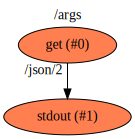
Click image to view functions graph.
arrays
Description
Sample to show the capabilities of:
-
gathering a stream of outputs of type Object to an input of type Object, of a specified size. This is done by the P2 'composer' (
ComposeArray) function. -
Decomposing an output of type array of objects to a stream of objects. This is done by the runtime when it sees a connection from an array of Type to Type.
-
P1 - sequence - generates a stream of outputs of type number
-
P2 - composer - input of type Number of width 4, output of type array of number
-
P3 - adder - input of type Number and output of type Number, adding 1 in the process
-
P4 - print - print the output (the original sequence with '1' added to each number)
This sample (with default settings on a multi-core machine) shows parallelism of the add function, dispatching
multiple jobs for it in parallel as the array of number output from the previous process is decomposed, creating
a job for each Number. You can see this by using the -j option of the runtime to limit the number of outstanding
jobs and the -m options to dump metrics after execution. The "Max Number of Parallel Jobs" should be similar or
greater than 4, which is the size of the array of numbers formed.
Context Diagram
Click image to navigate flow hierarchy.
Features Used
- Context Flow
- Setting initial value of a Function's inputs
- Multiple connections into and out of functions and values
- Library Functions
- Implicit conversion between arrays of objects and objects done by run-time
- Explicit conversion between a stream of objects and an array using the
compose_arraylibrary function
Functions Diagram
This diagram shows the exploded diagram of all functions in all flows, and their connections. 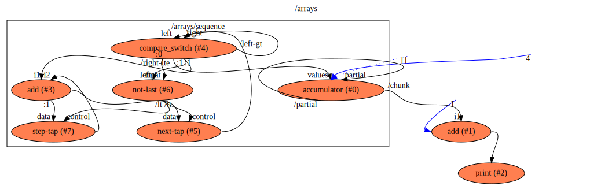
Click image to view functions graph.
factorial
Description
A flow that calculates the factorial of a number and prints it out on stdout.
Context Diagram
Click image to navigate flow hierarchy.
Features Used
- Context Flow
- Connections between functions
- Loop-back connections to accumulate a multiplication result
- Initializing function inputs with values, once and constantly
- Multiple connections into and out of functions
- Library Functions
to_json,multiply,subtractfromflowstdlib - Library Functions
tap,comparefromflowstdlib - Use of aliases to refer to functions with different names inside a flow
Functions Diagram
This diagram shows the exploded diagram of all functions in all flows, and their connections. 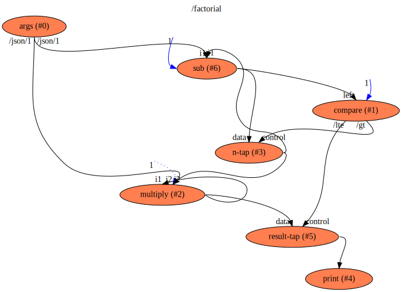
Click image to view functions graph.
fibonacci
Description
A flow that generates a Fibonacci series of numbers and prints it out on stdout.
Context Diagram
Click image to navigate flow hierarchy.
Features Used
- Context Flow
- Child flow described separately, with named outputs to parent flow
- Connections between Input/Outputs of parent/child flows
- Setting initial value of a Value at startup
- Multiple connections into and out of functions and values
contextFunctions used (stdout)- Library Functions used (
bufferandaddfromflowstdlib) - Use of aliases to refer to functions with different names inside a flow
- Connections between flows, functions and values
Functions Diagram
This diagram shows the exploded diagram of all functions in all flows, and their connections. 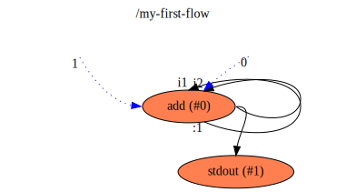
Click image to view functions graph.
hello-world
Description
A simple flow that prints "Hello World!" on stdout
Context Diagram
Click image to navigate flow hierarchy.
Features Used
- Context Flow
- Library Functions used (
stdoutfromflowstdlib)
Functions Diagram
This diagram shows the exploded diagram of all functions in all flows, and their connections. 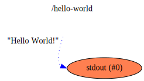
Click image to view functions graph.
mandlebrot
Render a mandlebrot set, with the size and imaginary space configured via input parameters.
The pre-configured test renders a very small mandlebrot set (25x25 pixels) in order to keep the test time short.
Description
Renders a mandelbrot into a PNG file.
Notably, this project in the project folder is a full standalone rust project
and the functions are made available as functions to the Flow project that is described
in the toml files alongside - showing how native code can live alongside and be used by
the flow.
Context Diagram
Click image to navigate flow hierarchy.
Features Used
- Context Flow
- Child flow described separately, with named outputs to parent flow
- Connections between Input/Outputs of parent/child flows
- Setting initial value of a Value at startup
- Multiple connections into and out of functions and values
- Library Functions used (
toStringandaddfromflowstdlib) to convert Number to String and to add numbers - Use of aliases to refer to functions with different names inside a flow
- Connections between flows, functions and values
Functions Diagram
This diagram shows the exploded diagram of all functions in all flows, and their connections. 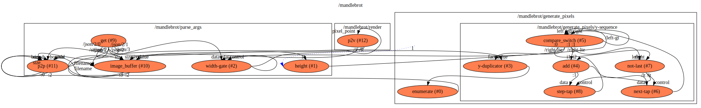
Click image to view functions graph.
factorial
Description
A flow that calculates the matrix product of two matrices.
Context Diagram
Click image to navigate flow hierarchy.
Features Used
- Context Flow
- Connections between functions
- Loop-back connections to accumulate an array, used to gather Numbers into array/number and then array/number into array/array/number (i.e. Matrix)
- Initializing function inputs with values, once and constantly
- Multiple connections into and out of functions
- Library Functions
to_json,multiply,subtractfromflowstdlib - Library Functions
tap,comparefromflowstdlib - Use of aliases to refer to functions with different names inside a flow
- Automatic array decomposing into the elements the array holds when target function input does not accept the array type
Functions Diagram
This diagram shows the exploded diagram of all functions in all flows, and their connections.

Click image to view functions graph.
pipeline
Description
A sample that shows a simple "pipeline flow" with a number of functions organized into a pipeline. When supplied with a "stream" of inputs, multiple functions are able to run in parallel utilizing more than one core on the machine.
Using command line options (-j, -t) the flow can be invoked with just one worker thread and it becomes sequential. The metrics of how many jobs were able to be processed in parallel can be viewed using the -m command line option.
Context Diagram
Click image to navigate flow hierarchy.
Features Used
- Context Flow
- Setting initial value of a Value at startup
- Multiple connections into and out of functions and values
- Library Functions used from
flowstdlib - Use of aliases to refer to functions with different names
- Connections between functions and values
- Referring to a function's input by name in connections
Functions Diagram
This diagram shows the exploded diagram of all functions in all flows, and their connections. 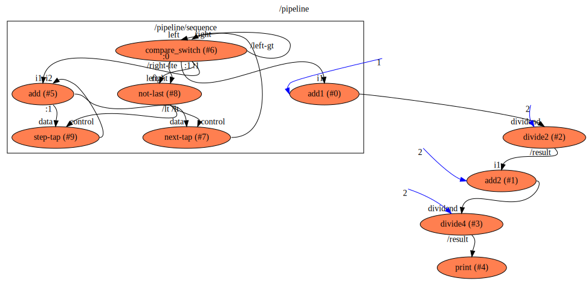
Click image to view functions graph.
prime
WIP
Description
A flow that finds prime numbers upto the maximum specified in the input arguments
Context Diagram
Click image to navigate flow hierarchy.
Features Used
- Context Flow
- Subflows
- Value (with an initial value set)
- Constant Value
- Arguments parsing for the execution
- Constant Value used
- Connections between functions
- Library Functions used
Argsto parse argumentssequenceto generate a sequence of numbersdivideto divide two numberscomparefunction to produce outputs based on comparing two input valuesswitchfunction to stop or pass a data flow based on another oneToStringto convert Numbers to Stringsstdoutto print a String to standard output
Functions Diagram
This diagram shows the exploded diagram of all functions in all flows, and their connections. 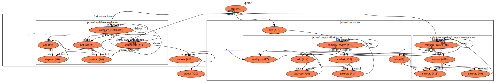
Click image to view functions graph.
primitives
Description
A flow that takes a value and a constant and adds them, and then takes the result and adds it to the constant again and then printed the final value to stdout. It also uses the switch function to stop a flow with a false value, and compares the result of the add to a value and print out to stdout if it is greater or equal to it.
The purpose is not to do anything useful, but just to show the use of and stress the semantics of a number of the primitives.
Context Diagram
Click image to navigate flow hierarchy.
Features Used
- Context Flow
- Library Functions used (
addandstdoutfromflowstdlib) - Value used (with an initial value set)
- Constant Value used
- Connections between functions
- Two functions of the same name in the same flow, distinguished by
alias switchfunction to stop or pass a data flow based on another onecomparefunction to produce outputs based on comparing two input values
Functions Diagram
This diagram shows the exploded diagram of all functions in all flows, and their connections. 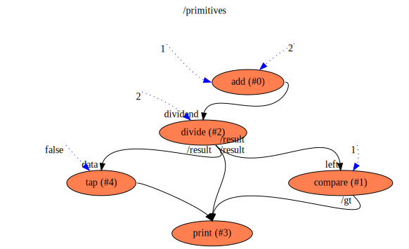
Click image to view functions graph.
reverse-echo
Description
Trivial flow that takes a line on stdin, reverses it and then prints it on stdout
Context Diagram
Click image to navigate flow hierarchy.
Features Used
- Context Flow
- Library Functions used (
stdinandstdoutfromflowstdlib) - Custom function (in rust) with a structure on the output with sub-elements
- Connections between functions
- Connections from sub-elements of a function's output
- Function with single input (stdout) not requiring input name
Functions Diagram
This diagram shows the exploded diagram of all functions in all flows, and their connections. 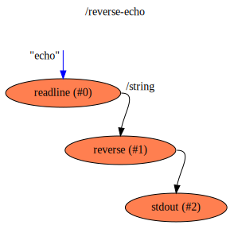
Click image to view functions graph.
router
Description
This sample implements the algorithm (as described here https://github.com/andrewdavidmackenzie/router) for calculating the shortest route from a start-point to an end-point through a simplified road network.
Context Diagram
Click image to navigate flow hierarchy.
Features Used
- The selection of a single Value from an array of values that is one of a number of outputs (not the only output). This involves selecting the structure from the output by route, and then the value from that by index.
Functions Diagram
This diagram shows the exploded diagram of all functions in all flows, and their connections. 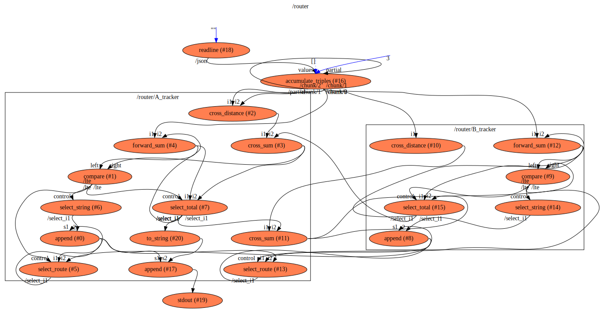
Click image to view functions graph.
sequence
Description
A flow that generates a sequence of output numbers in a range between two input numbers
Context Diagram
Click image to navigate flow hierarchy.
Features Used
- Context Flow
- Value used (with an initial value set)
- Constant Value used
- Connections between functions
- Two functions of the same name in the same flow, distinguished by
alias - Library Functions used
addto add numbersToStringto convert Numbers to Stringsstdoutto print a String to standard outputswitchfunction to stop or pass a data flow based on another onecomparefunction to produce outputs based on comparing two input values
Functions Diagram
This diagram shows the exploded diagram of all functions in all flows, and their connections. 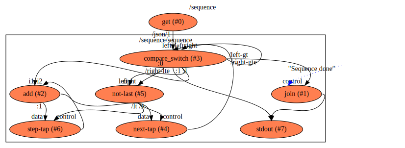
Click image to view functions graph.
range-of-ranges
Description
A flow that generates a range of numbers, and for each of them generates a range from 1 upto the numner. This is intended as a test case for an issue with two linked flows like 'sequence' that can lead to a deadlock
Context Diagram

Click image to navigate flow hierarchy.
Features Used
- Context Flow
- Library Functions used (
stdoutfromflowstdlib) - Library Flows used (
sequencefromflowstdlib) - Connections between functions
Functions Diagram
This diagram shows the exploded diagram of all functions in all flows, and their connections. 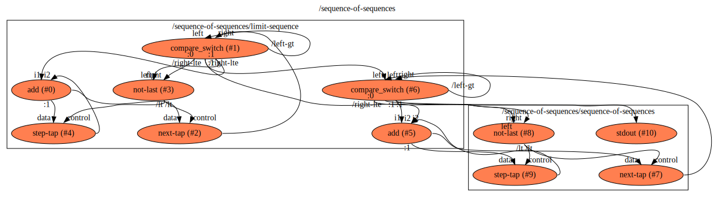
Click image to view functions graph.
tokenizer
Description
Sample to show the possible parallelization (depending on the runtime implementation) of splitting a string into tokens using the string splitter function from the flowstdlib.
Context Diagram

Click image to navigate flow hierarchy.
Features Used
- Context Flow
- Setting initializer of a Function's input with a constant initializer
- Library Functions
- Iteration (possibly in parallel) via feedback of partial output values back to the same funtion's input.
- Implicit conversion between arrays of string and string done by run-time, in feedbak loop to the same process
Functions Diagram
This diagram shows the exploded diagram of all functions in all flows, and their connections. 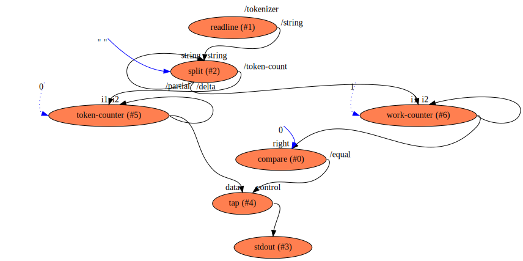
Click image to view functions graph.
Developing flow
Supported Operating Systems
The CI tests for 'flow' run on Mac OS X and Linux. Others may well work as rust projects are pretty portable but I develop on Mac OS X and don't know the status on other OS.
Pre-requisites required to build and test
These are the pre-requisites that are required to build and test 'flow':
- rust toolchain (
rustup,cargo,rustc, etc )- with
wasm32-unknown-unknowntarget for compiling to wasm clippyfor checking coding best practices
- with
zmq(Zero Message Queue) librarygraphvizutilities for automatic generation of SVG files for docs
For building the guide:
mdbook and the mdbook-linkcheck plug-in
Installing pre-requisites
You have to install rustup, cargo and rust toolchain yourself. I decided to stop short of futzing with people's installed toolchains.
There is a Makefile target config that will install the other dependencies:
make config
That will add the wasm32-unknown-unknown target, clippy, graphviz, mdbook and mdbook-linkcheck.
flowcore
See also: Code docs
flowcore is a library of core structs and traits related to flow that is shared between multiple flow
crates, and separate to avoid a cyclic dependency.
flow_impl
This is a trait that implementations of flow 'functions' must implement in order for them to be invoked by the flowrlib (or other) run-time library.
An example of a function implementing the Implementation trait can be found in the
docs for Implementation
provider
This implements a content provider that resolves URLs and then gets the content of the url.
flowmacro
See also: Code docs
Flow is an attribute macro to be used on the structure that provides an implementation for a function (by implementing
the FlowImpl trait), so that when compiled for the wasm32 target, code is inserted to help read the inputs,
help form the outputs and allocate memory (alloc) as well as serialize and deserialize the data passed across the
native/wasm boundary.
flowc
See also: Code docs
flowc is the "compiler and linker" for flows and flow libraries, although it is not
very similar to what you might be familiar with as a compiler or linker.
It loads flow definition files, and builds the flow hierarchy reading from referenced flows/functions and library references, and builds the flow in memory.
Then it connects all functions via data flows through the hierarchy and removes most of the flow structure leaving a "network of functions" which it then optimizes (removing unused functions and connections).
It checks that types match and required connections exist.
It also checks for some illegal or cases that would prove problematic at runtime (specific types of "loops" or contention for a connection)
Lastly it generates a manifest describing the flow, which can be executed by flowr.
It then may (depending on the command line options used) invoke flowr (using cargo to ensure
it is up to date and built).
flowclib
This library contains most of the compilation and linking logic for flowc.
See also: Code docs
Test flows
These are a number of test flows to exercise specific features and are not intended to be "real world programs" or solutions to problems.
They are contained in the flowc/tests/test-flows folder in the code.
Structure of each test
Each test flow of name 'text-name' is in its own folder, which includes:
- A
test-name.tomlfile that contains the flow description - Files used in the automated testing of each sample:
test-name.argsthe arguments to be passed to the flow when running ittest-name.stdinthe input supplied to the flow on standard input when running ittest-name.expectedthe output that the flow is expected to produce when invoked withtest-name.argsas command line arguments (viaflowr) andtest-name.stdinsent to standard input
Execution of each test
- The test flow will be compiled by
flowcand the manifest generated in a file namestest-name.json - The
test-name.jsonmanifest will be executed byflowr, passingtest-name.argsas it's arguments and piping the contents oftest-name.stdinto standard input, and standard output of the flow execution will be captured. - The standard output will be compared to
test-name.expectedand if identical the test will pass. Any differences and the test will fail.
hello-world-simple
Description
The simplest possible "Hello World!" example with 'flow'.
Features Used
- Context Flow
- A String value that is initialized at start-up
- Context Functions used (
stdoutfromcontext) - A connection between the value and the function
line-echo
Description
A trivial flow that takes a line on stdin, and prints it on stdout
Features Used
- Context Flow
- Library Functions used (
stdinandstdoutfromcontext) - Connections between functions
print-args
Description
A flow that takes the arguments passed to the flow on the command line and prints the first one (after the flow's source URL) out on standard output
Features Used
- Context Flow
- Library Functions used (
argsandstdoutfromcontext) - Connections between functions
Important make targets
- (default)
makewill build, run local tests and generate docs. make build-guidewill just generate the HTML for the guide if you are writing docs. But better would be to justcd guide && mdbook serveas that will track and update the generated content as you make changes, allowing you to view them instantly with a browser refresh.make testthis should be what you run to check changes you have made work OK. At the moment it is the same as 'make travis' until I re-instate some tests I was having issues with.
Contributing
There are many ways of contributing
- adding an issue with a bug report of an enhancement request or new feature idea
- pick up a help wanted issue and try and fix it
- adding to or correcting the docs and this guide
- adding a new sample
- improvements to the libraries, compiler, standard library, run-time
- improvements to unit or integration tests
- improvements to build processes (e.g. getting coverage reports working etc)
Issues
Issues can be found in the repo, if you are not yet a project contributor then just add a comment to one to say you'd like to work on it and I will avoid doing the same.
I work on issues KanBan style in this Github Project
Adding new issues you find can also be helpful, although with my limited time on the project, fixing issues and sending PRs are more welcome! :-)
PRs
If you want to contribute a code or test or docs or tolling change....
- if no existing issue exists for it, create one so we can agree on what to do before starting (a good idea to make later PR merges easier to accept I think!)
- if an issue exists already add a comment to it so I know you want to work on it
- fork the repo
- create a branch for the issue in your repo
- make your changes and update tests, docs and samples as required
- run tests ('make travis') before pushing to your branch
- wait for Travis to pass
- submit the PR, referencing the issue is a good idea
Sample flows
This crate and folder contains a number of sample 'flows' that have been developed during the development of the compiler and the run-time to drive the project development and demonstrate it working.
They also serve as a type of regression test to make sure we don't break any of the semantics that the samples rely on.
They range from the extremely simple "hello-world" example to more complex ones like generation of a fibonacci series or a mandlebrot set image.
Structure of each sample
Each sample directory contains:
- A
DESCRIPTION.mdfile that:- describes what the
Flowdoes - lists the features of
flowthat this sample uses and demonstrates
- describes what the
- A
root.tomlfile that is the root file of the flow description - Files used in the automated testing of each sample:
test_arguments.txtthe arguments to be passed to the flow when running ittest_input.txtthe input supplied to the flow when running itexpected_output.txtthe output that the flow is expected to produce when invoked withtext_arguments.txtand inputtest_input.txt
Compiling the Samples
The samples set has now been converted to a rust crate with a custom build script.
There is no dependency declared in Cargo.toml on the other crates (as you cannot currently declare a
dependency on a binary, just a lib), but in order to build, test and run this crate/folder you will need flowc
and flowr installed and on $PATH in order for build scripts to find them.
Using cargo build -p flowsamples causes the build script to run, and it compiles in-place the samples
using the flowc compiler.
Running the Samples
Using cargo run -p flowsamples causes the sample runner in main.rs to run. It looks for sub-folders in
the samples folder and then executes the sample within.
When running them, it uses:
- test.arguments - arguments passed to the flow on the command line when executing it
- test.input - test input to send to the sample flow using STDIN
The output is sent to standard output.
To run a specific sample only use cargo run -p flowsamples {sample-name}
Testing the Samples
You can test all samples by using cargo test -p flowsamples,
it will run each one in turn with the pre-defined arguments and standard input.
It also gathers the standard output, standard error and files generated and checks for correctness by comparing them to previously generated content distributed with the package.
- If there is any standard error found in the file test.err then the test will fail.
- If there is no standard error then it compares standard output captured in test.output to expected.output and fails if there is a difference.
- If an expected.file exists then it compares it to file output in test.file and fails if there is any difference with the expected file.
cargo test -p flowsamples
Finished test [unoptimized + debuginfo] target(s) in 0.11s
Running target/debug/deps/samples-9e024e2c420db146
running 16 tests
test test::test_all_samples ... ignored
test test::test_args ... ok
test test::test_arrays ... ok
test test::test_factorial ... ok
test test::test_fibonacci ... ok
test test::test_hello_world ... ok
test test::test_mandlebrot ... ok
test test::test_matrix_mult ... ok
test test::test_pipeline ... ok
test test::test_prime ... ok
test test::test_primitives ... ok
test test::test_sequence ... ok
test test::test_sequence_of_sequences ... ok
test test::test_reverse_echo ... ok
test test::test_router ... ok
test test::test_tokenizer ... ok
test result: ok. 15 passed; 0 failed; 1 ignored; 0 measured; 0 filtered out
NOTE: Until multiple instances of the client/server pair for running flows can be run at once, we need to restrict the test framework to only run one test at a time, otherwise by default it will run multiple tests at once, and some will fail.
NOTE: At the moment, to make the progress more visible, each sample has a test manually added to it
in samples/main.rs, so for a new sample a test needs to be added by the author.
To test just one sample use cargo test -p flowsamples {test-name}
cargo test -p flowsamples test_factorial
Finished test [unoptimized + debuginfo] target(s) in 0.12s
Running target/debug/deps/samples-9e024e2c420db146
running 1 test
test test::test_factorial ... ok
test result: ok. 1 passed; 0 failed; 0 ignored; 0 measured; 15 filtered out
Default workspace member crate
The samples crate is one of the default-members of the flow workspace project, so it is used if no
particular package is supplied, thus the samples can also be built and run using:
cargo build: compile the samples usingflowccargo run: run the samples usingflowrcargo test: run the samples usingflowrand check the generated output is correct
As other default-members are added to the workspace over time, those commands may do other things, so
just be aware that if you only want to run the samples the -p samples option above will be safer.
flowsamples executable
There is also an executable (bin or binary) installed with the library called flowsamples that if run
without any arguments will run all the samples. You can supply it the name of a sample (the name of the folder
under samples where the sample is) to run just that one sample.
Developing a new sample
To develop a new sample, just create a new folder under 'samples' with your sample name.
Add the root.toml and any other included flows and describe them.
Add a DESCRIPTION.md file that describes what the sample does and what features of flow it uses.
Add an entry in the guide's "samples" section that will include the DESCRIPTION.md file above.
Continuous Integration testing of flow
The CI build and test run in Travis on each push to a branch or PR can be run locally
using make travis.
These tests include unit and integration tests, rust doc-tests and it also compiles, generates, runs and checks the output of all the samples found in the ./samples folder.
This will also rebuild the guide locally.
I recommend to make sure this runs without errors and passes before pushing to GitHub.
Internals Overview
In this section we provide some more details on what flowc does when you use it to compile, generate, build and run a flow.
The process includes these areas described in more detail in the following pages:
- Flow loading: the process of reading in the flow description and building an internal representation of it
- Flow compiling: take hierarchical flows representation loaded from previous stage and "compile down" to one more suited for project for flow project generation for execution.
- Flow execution: The generated project is loaded by the generic run-time library (flowrlib) and the functions are executed in turn.
Flow Loading
Read in the hierarchical definition, recursively reading all nested flows until everything loaded.
Build the connections between values, functions, input and outputs using the unaliased routes to functions and subflows.
Check that the from/to types on connections match.
Flow Compiling
From the hierarchical definition of a flow program produced by the loading stage:
Connection Reducing
Build a flat table of connections.
For every connection that ends at a flow:
- Look through all other connections and for each one that starts where this flow starts:
- Replace the connection's destination with this connections destination.
- Delete this connection
When done there should be no connections ending at flows. Any connections left that starts at a flow, is unconnected and can be deleted.
Value and Function Tables
Build a table of values and functions.
Pruning Value and Function Tables
Drop the following combinations, with warnings:
- values that don't have connections from them.
- values that have only outputs and are not initialized.
- functions that don't have connections from their output.
- functions that don't have connections to all their inputs.
Flow Execution
Lazy Execution
Execution should be as lazy as possible.
The only thing that determines if a function is run is the availability at its inputs of the data for the run, and the ability to produce the result at its output by having the output free.
If the output is free because a second function is running and hasn't consumed its input, then the first function will be blocked and computing resources will be used on the functions that most need it. When they complete and produce an output, that output may satisfy another functions' inputs which in turn will run, and so on and so forth.
Execution States
Functions can be in one of two states:
- blocked (either input is pending or output is blocked)
- ready (inputs are satisfied, output is free and it can be run anytime)
Value Rules
A Value has only one input, but that can be connected to a value offered by multiple "writers". It has only one output, but that can be connected to and listened on by multiple "listeners"
It stores a value, that can be initialized when the program is loaded to an initial value.
When the value is empty it can be updated. When it is updated, the value is made available to all "listeners" at its output. While it stores a value, it cannot be updated, and any writer will be blocked until the value is consumed and can be updated again.
Each of the listeners can read or "consume" the value once.
When it has been consumed by all listeners, the value becomes empty (None) and can be updated again.
It does not become empty until all listeners have consumed the value.
You can think of Values as a FIFO of size 1 for each listener connected to it.
Function Rules
The operation of a Function is similar to that of a value, except that it can have multiple inputs and it is not run until they are all satisfied.
A function does not store any value or state, beyond making it's output available to listeners asynchronously.
A Function can have zero or more inputs. Each input can be connected to and written to by multiple "writers". It has only one output, but that can be connected to and listened to by multiple "listeners".
A Function can only run when a value is available at each of it's inputs and it's output is free to write to.. It is blocked from running until these conditions are met.
When a function runs, it produces an output that is made available to all "listeners" at it's output.
Each of the listeners can read or "consume" the output value once.
Generalized Rules
If we consider a value to be like a null function that does no calculation, but just passes the input value to it's outputs - then we can state some general rules that apply to the "running" of both.
- Can have zero or more inputs (max 1 for a Value)
- Each input can be connected to and values offered to it by multiple "writers".
- Has one output, that can be listened on by multiple "listeners".
- Can only be run (updated) when a value is available at each of the inputs and the output is free to write to. Is blocked from running until these conditions are met.
- When ran, it produces an output that is made available to all "listeners" at its output.
- Each of the listeners can read or "consume" the output value only once.
- Once the output has been consumed (once) by all of the listeners, then the output is free to be written again.
Execution Process
Loading
All functions and values are loaded.
Initialization
Any values with initial values are initialized with them and hence make them available on their output, and hence they are made available on the input of all connected objects (values and functions).
Now, the execution loop can be started.
Execution Loop
Next ready Function is run
- Next function on the read list is run
- this consumes all its inputs
- this may unblock another function which was blocked sending to this functions as it's input was full
- this consumes all its inputs
- Any data produced is made available on the output
- Outputs are made available to all connected inputs on other functions
- The data on any output is made available to all connected inputs, copied if necessary to multiple.
- This may satisfy the inputs of the other function, causing it to be added to the ready list
Parallel Execution
A core goal of 'flow' is to enable parallel execution of programs, with the parallelism being described inherently in the flow description, via data dependencies and functions with zero side effects.
Currently, the run-time only executes one function at a time, but that is destined to change as soon as it can be implemented, both in multiple threads in the same process on one machine, then multiple processes on one machine and then across machines across a network.
Termination
The execution of a flow terminates when there are no functions left on the ready list